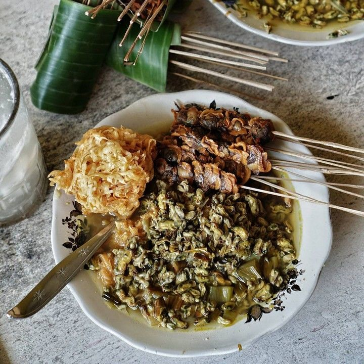
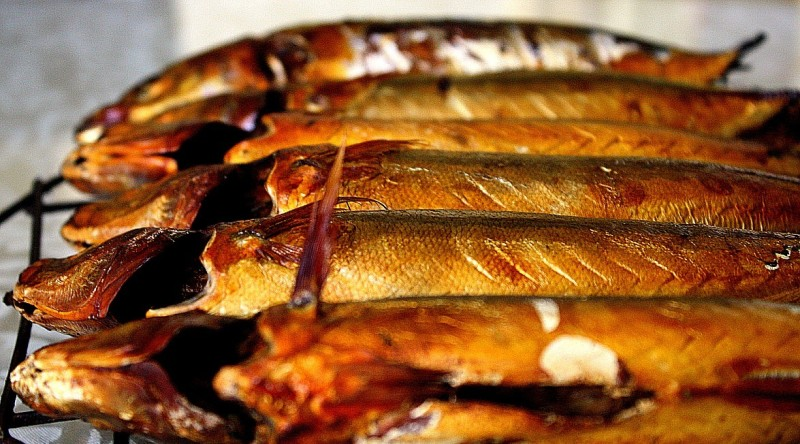
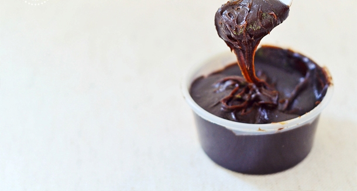
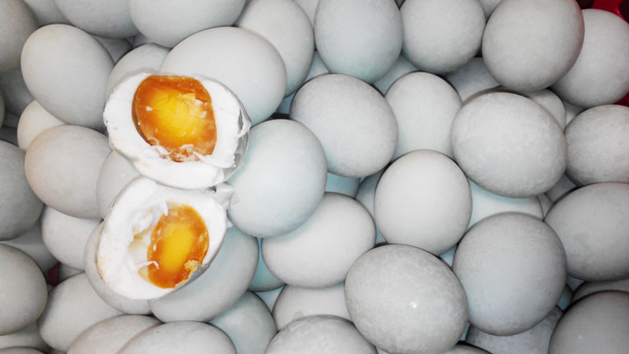
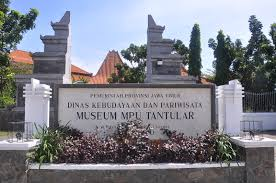
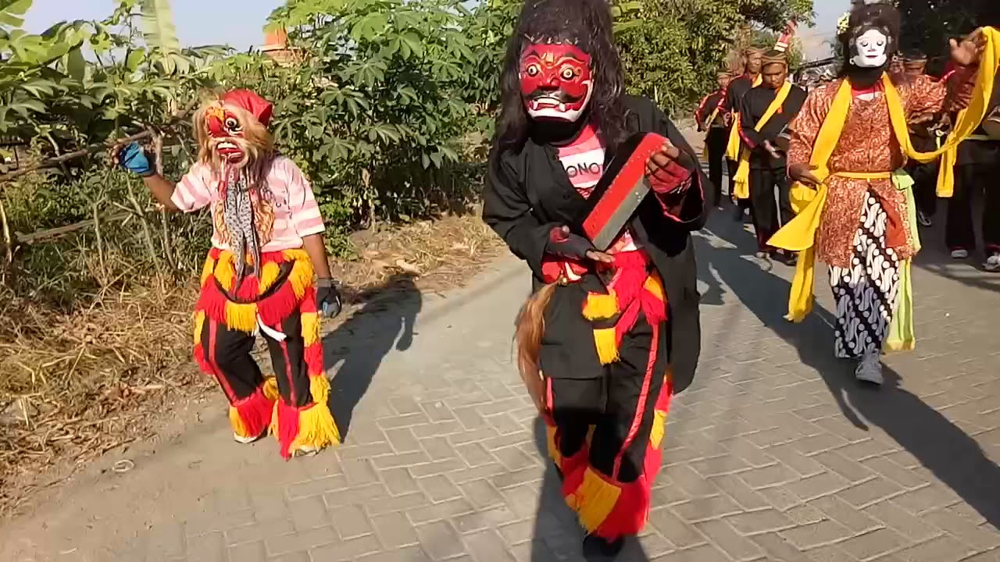
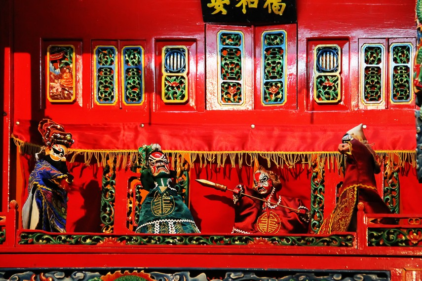
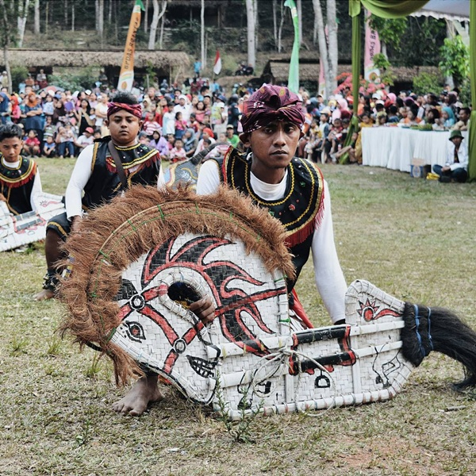

Sidoarjo
Hatinya
Tentang Sidoarjo
Kabupaten Sidoarjo adalah sebuah
kabupaten di Provinsi Jawa Timur,
Indonesia.
Ibu kotanya adalah Sidoarjo.
Kabupaten ini berbatasan dengan Kota
Surabaya dan Kabupaten Gresik di utara,
Selat Madura di timur, Kabupaten Pasuruan
di selatan,
serta Kabupaten Mojokerto di barat.
Bersama dengan Gresik,
Sidoarjo merupakan
salah satu penyangga utama Kota Surabaya,
dan termasuk dalam kawasan GERBANGKERTOSUSILA.
~KULINER SIDOARJO~

1. Lontong Kupang
Komposisi dari makanan ini adalah lontong, kupang, lentho dan siraman kuah kupang. Kupang adalah sejenis kerang laut yang berukuran kecil dan berwarna putih, sedangkan lentho adalah olahan kacang telo yang berbentuk oval mirip perkedel, lalu digoreng. Cara penyajiannya adalah dengan memasukkan irisan lontong dan lento kedalam piring, lalu di siram dengan kuah dari kupang dengan ditambah bumbu petis dan bawang putih (sebelum dihidangkan, bawang putih dan cabe dihaluskan lalu ditambah dengan petis, biasanya diberi perasan air jeruk nipis).

2. Bandeng Asap
Bandeng asap ini dibuat dengan cara dimatangkan melalui proses pengasapan. Setelah diasap dan dipilah, bandeng asap ini dijual dalam kemasan box dan biasanya ditambah saus sebagai tambahannya. Karena dari proses pengasapan, maka makanan ini bisa bertahan dalam waktu yang lama.

3. Petis
Petis merupakan masakan yang terbuat dari cairan sisa perebusan ikan. Lalu cairan tersebut dipanasi hingga cairan kuah menjadi kental seperti saus yang lebih padat. Kemudian petis ditambah dengan gula merah atau gula batok yang menyebabkan warnanya menjadi cokelat pekat cenderung hitam dan rasanya manis. Meskipun banyak daerah yang menghasilkan petis, Namun masakan satu ini dikenal sebagai masakan khas dari kota Sidoarjo.

4. Telur Asin
Telur asin ini terbuat dari telur bebek yang diolah dengan cara pengasinan (diawetkan dengan memberi garam yang banyak untuk menonaktifkan enzim perombak). Telur asin ini sangat awet, rata-rata bisa di konsumsi dalam rentan waktu satu bulan.
WISATA SIDOARJO
LUMPUR LAPINDO
Bencana lumpur ini terjadi karena kelakuan manusia yang lali dan tidak bertanggung jawab. Sehingga menyengsarakan penduduk Kota Sidoarjo. Sering bertambahnya waktu semburan lumpur panas Lapindo ini di jadikan obyek wisata yang menarik dan hanya ada di Sidoarjo.
PULAU SARINAH
Lokasi wisata pulau surinah ini berada di Desa Kedugpandan yang ada di Kecamatan Jabon Sidoarjo. Obyek wisata ini selalu ramai di kunjungi oleh wisatawan pada hari libur dan akhir pekan. Di tempat ini anda bisa menikmati panorama alam yang indah,hijau dan asri. Di tempat ini anda juga bisa menaiki perahu kecil yang memberikan sensasi yang menantang karena desiran ombak kecil.

MUSEUM MPU Tantular
Tempat ini adalah destinasi wisata edukasi yang cocok bagi anda yang suka belajar sejarah. Didalam museun ini terdapat koleksi Etnografi yang beragam, koleksi emas, Goelogi, Biologi, Numismatik, dan seni rupa.
BUDAYA SIDOARJO
Reog Cemandi
Reog Cemandi adalah kesenian asli Sidoarjo. Kesenian itu muncul pada tahun 1926. Reog Cemandi berbeda dengan Reog Ponorogo. Yang membedakan adalah tidak adanya warok, dan topengnya tidak dihiasi dengan bulu merak seperti ciri khas reog Ponorogo. Irama musik yang digunakan adalah angklung dan kendang kecil. Jumlah pemain Reog Cemandi sekitar 13 orang. Dua penari yang memakai topeng Barongan Lanang (laki-laki) dan Barongan Wadon (perempuan), enam penabuh gendang dan empat pemain angklung.

Wayang Potehi
Kesenian adalah kesenian khas China, keberadaannya melekat dengan klenteng atau rumah ibadah Tionghoa. Di Sidoarjo ada di klenteng Tjong Hok Kiong di Jalan Hang Tuah, di kawasan Pasar Ikan. Di Sidoarjo, wayang potehi hanya digelar saat perayaan hari jadi Makco Thian Siang Seng Bo di Kelenteng Tjong Hok Kiong, Jalan Hang Tuah Sidoarjo.

Jarang Kepang
Kelompok seni tradisi jaranan hampir punah di Kabupaten Sidoarjo, tak sampai hitungan jari sebelah tangan. Sebelum 1980-an, cukup banyak grup jaranan yang menggelar atraksi hiburan di kampung-kampung. Kelompok-kelompok seni Jaranan atau Jaran Kepang yang selama ini ada di Sidoarjo bisa dikatakan bukan asli atau berdomisili di Sidoarjo.
